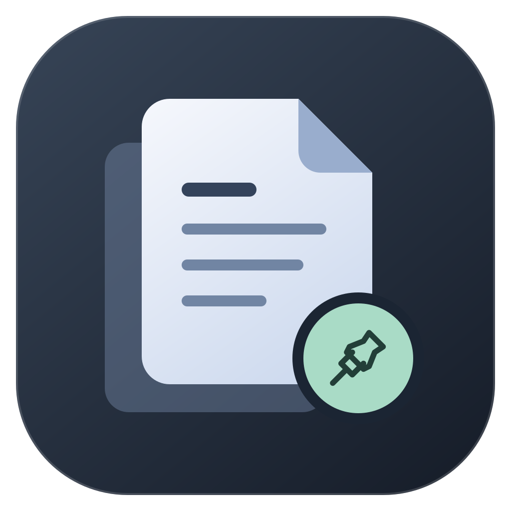

信息就在手边，点击即复制。
粘贴模型返回的 JSON，或选择文件。保存前会检查格式。
合并时更新同名分组中的同名字段，其余保留；取消勾选将整体替换。重复名称按出现顺序对应。
只填写需要的信息，空项不会显示。可添加多个家庭成员、联系人或经历，也可以完全自定义。绑定值可填写文件路径或 URL；仅绑定时，显示文本使用字段名。
发送前确认模型平台的隐私设置，导入后核对提取结果。
简历仅保存在这台设备。换电脑前，先导出 JSON 备份。
全局生效，可在投递页面直接折叠。示例：Ctrl+Space、Ctrl+Alt+K。
LeftClick = 左键，RightClick = 右键，MiddleClick = 中键。支持修饰键 + 鼠标或键盘组合。键盘组合需先聚焦目标字段；路径复制后可粘贴到系统文件选择框，不会自动上传。
v0.4.0 · 更新简历：主界面右侧 ✎软件升级：安装新版本即可，数据独立保存在用户目录。Linux Wayland 下置顶和窗口定位由桌面环境决定。